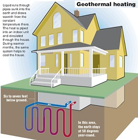
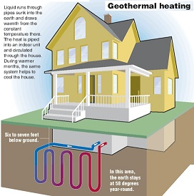
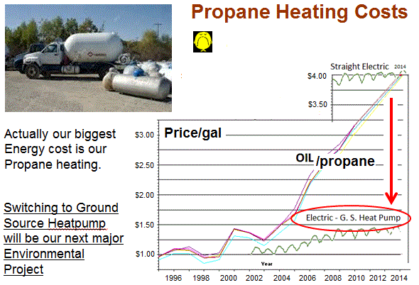
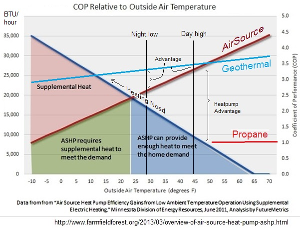
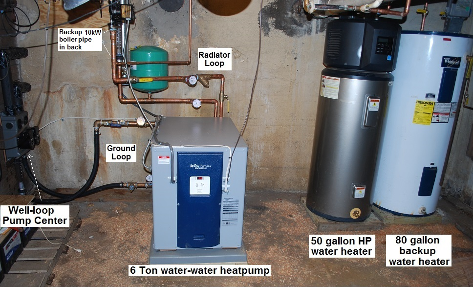
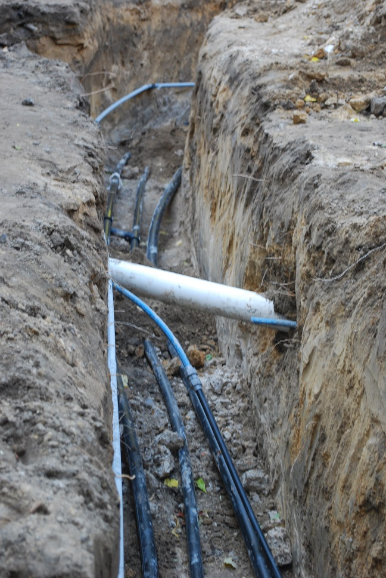
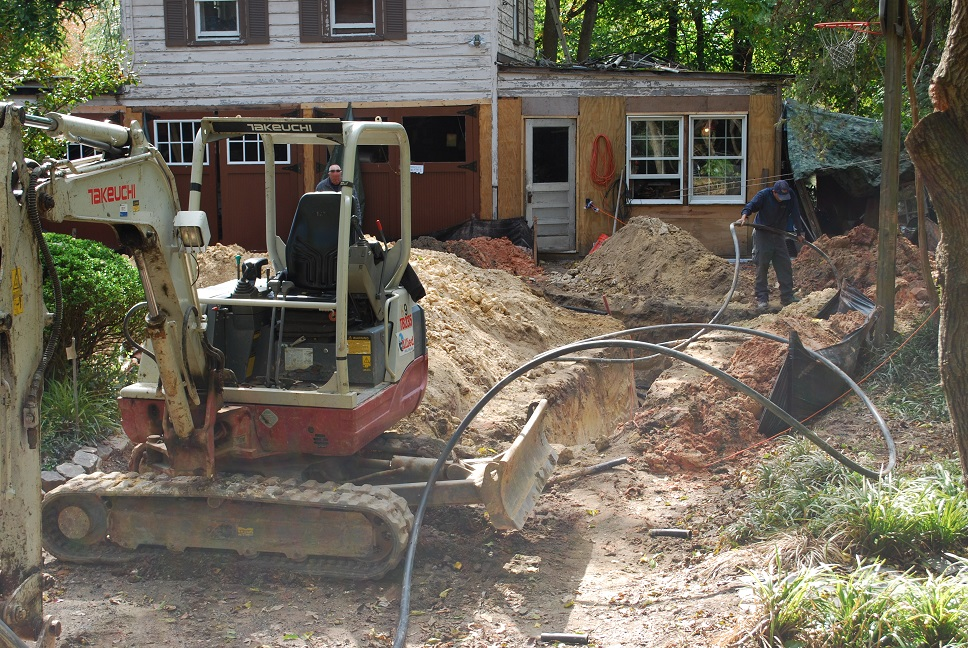

Environmental Heritage: Quakers have a tradition of simplicity and a testimony for the stewardship of the Earth. We are committed to living in harmony with our environment.
Almost everything we consume to date has originated with the burning of fossil fuels. This course is simply not sustainable and as a spiritual society with concerns for our fellow man and woman we hope to do what we can in sustaining our future for the long term. In our fossil fuel burning pie at right, the bulk of our consumption and damaging emissions comes from Coal for electricity, Propane for heating, and Gasoline for driving to and from meeting. All of these needs now in the 21st century can be not only met with clean renewable enrgy from the sun and wind, but they are actually less expensive in the long run!

Previous Evnironmental Initiatives: In 2011, AFM signed up for 100% clean renewable utility electricity via Interfaith Power and Light of DC/MD/VA. This eliminated our use of coal and oil for electricity. Then we just completed our own solar system in January, 2014. Earlier in 2011, we had also begun to support EV charging for members use of clean renewable local transportation instead of the estimated 30 gallons of gas we all collectively burn every Sunday driving to/from meeting.
Solar Thermal Water Heating is obsolete: With the high efficiency of modern heatpump systems and the dramatic drop in cost of PV solar panels, the only cost effective way to heat water these days is with PV panels and a heatpump. Even since 2006 solar thermal hot water heating was dead. Now with solar PV dropping ten to one since then, Solar Thermal water heating is really, really dead.
Geothermal Heating: But the greater portion of our legacy of fossil fuel consumption for AFM was the $4500 a year we were spending (at an ever increassing price) on propane for building heating when a heatpump could do the same job for only about $1500 a year. And the electrcity to drive it could be clean wind or our solar. In 2013 oil (and propane) was up to nearly $4 a gallon making oil (and propane) heating cost even more than straight resistance heating which has always been the most expensive kind of heating there was. As we pondered the eventual replacement of our 20 year old HVAC systems, we seriously considered a geothermal heating/AC system.
Non-Profit-Gotcha: A rough estimate for this project might have been about $50k with $25k for the geo thermal wells and $25k for the two new 5 ton HVAC heatpumps. Fortunately, for the homeowner, just like with solar, these up-front costs can get almost 40% of that value covered in tax credits and state grants. But, unfortunately, just like going solar, most of these government tax incentives were not available to churches and non-profits that don't pay taxes. So if we invested in Geopthermal outright, as a non-profit organization, we would end up paying nearly 40% more than a homeowner or commercial entity would pay. There are workarounds in the solar industry involving forming a corporation to raise the investment money and then the corporation takes the credits and passes them back to the meeting via reduced heating costs. But no one has proceeded with this approach for Geothermal.

Occupancy Gotcha! But there was another Gotcha that is unique to small Churches and that is the daily usage of the building. We were convinced that Geothermal, being so much more efficient, was the only practical way to go (at double the cost) until we looked at our Thermostat settings. As it turns out, our building is unoccupied most of the day and most uses are in the evenings and Sunday.
Looking at our thermostat timing, the building is maintained at or below 60F for at least 20 of the 28 weekly timing cycles and except for Sunday, the heat is not programmed to come up to 70 except in the late afternoons for those evening uses. This means the majority of heating is being done in the late afternoon, which of course is when the outside temperatures are the highest. Even in January, the climate in Annapolis averages above 44F which is perfectly fine for an Air-Source heat pump (and not much worse than the below-ground geothermal sourcing temperature (48F).
In the figure at right, you can see that Geothermal has a higher coeficient of performance (COP) than an air source heatpump at all outdoor temperatures below about 50F. Since this is where the most heat is needed as temperatures get colder, Geothermal is much more cost effective. Two vertical lines on the chart indicate the January nightime low (28F) and the January daytime high (44F). Any dwelling with people living overnight or in the building during the morning need heat at the overnight low where you can see that Geo has a significant advantage.
But for our building usage, with no permanent office staff, minimal daytime use and no one overnight, the majority of heat load is in the afternoon in preparation for evening usage, and the advantage of the geo over the airsource heatpump is very small. To get an idea of the value of this difference, we also plotted the COP for our existing Propane heating (1.0). This cleary shows the almost 3-to-1 advantage of going from Propane to either form of Heatpump. But then it also shows that the very small advantage (about 0.2 COP) of geo over air-source on our unique heating need is less than 7%. This would not be the least cost effective as the payback period in our case would be over a 100 years for geothermal at the way we use our building. Wheras a simple common air-source heatpump will give us the 3-to-1 advantage at half the cost. Not only is the return oon investment only a few years, it also allows us to use 100% clean solar and wind for out heating.
To our surprise, the conclusion to switch to a conventional air-source heatpump instead of geothermal makes the must sense for us.
Thermostat set-back Gotcha! Remember, however, that heatpump systems always have emergency backup heat for those coldest nights, and for QUICK response. This means it switches from efficient heatpump to THREE times more expensive resistance electric emergency heat whenever the Thermostat setting exceeds the room temperature by just 2 degrees. This means, if we progam our thermostats down to 60F at night and up to 70F for meetings, we BURN UP all our heatpump's savings by forcing every heating cycle to run with emergency heat! That is why they say to never setback heatpump heating by more than 2 degrees. The industry standard for "droop". Which is hardly worth doing.
Proper Setback Settings: The way to properly program a thermostat for 10 degree setback is to go into the "installer settings" and change the "droop" setting from 2F to 5F. This way, it takes a 5 degree change before the emergency resistance heating comes on. So we setback to 58F at night, and then set it to come up to 62F at around 3PM then up to 66F at around 4PM and then up to 70F at 5PM for evening meetings. THis way, the thermostat never demands more than a 4F temperature rise at a time and keeps the heatpump from ever using "emergency" heat during normal operation.
Typical System: The image below is an example of a 6 ton Ground Source heatpump. The heatpump is in the center, the ground loop pumps are on the left, and a modern heatpump water heater is on the right. An old electric water heater tank is preserved in line to top off the water temperature and to provide backup capacity for high demand. Note, this example is for a house with cast-iron radiators and so the heatpump is a water-to-water unit and not as common as most modern homes with HVAC duct work or what we have at AFM. For an air handler system the core heatpump unit would be similar but the sheetmetal duct work would make it appear much larger.


Trenches: The photo at right shows the 5' deep trench with the ground loop header piping to three of four 300' wells in this system. The 4th well is 20' around the far corner to the right. The 4th well is near the buldozer in the photo farther down the page.
Geothermal Installation Impact: We still will have another HVAC decision to make in the future when we build our ultimate meeting house. But if we do decide to go geothermal, we have plenty of room in our lawn area for the geothermal wells. The impact of drilling will not be anywhere near the significance of our personal front yard where the installation impact was enormous! The drilling truck was 30 feet long and needed at least 13 feet of overhead clearence just to get in, and then needed 33' of clear sky vertical clearance over the wells. This involved supstantial tree trimming as well. The photo here shows the impact on our home's front yard driveway after the well drilling rig has left and then the connecting trenches were dug.

Return to Annapolis Friends Meeting Environmental page
Bob Bruninga, PE
lastname@usna.edu
{kind=link}